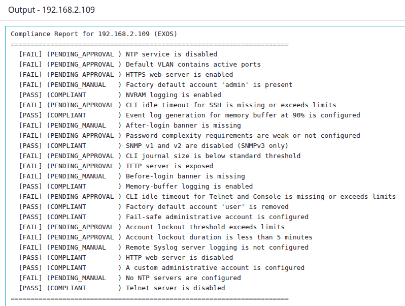
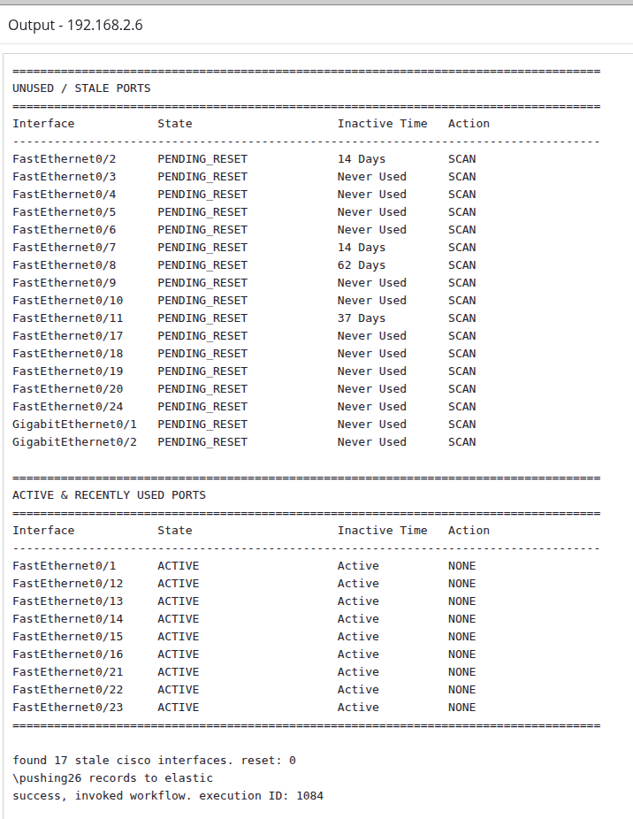
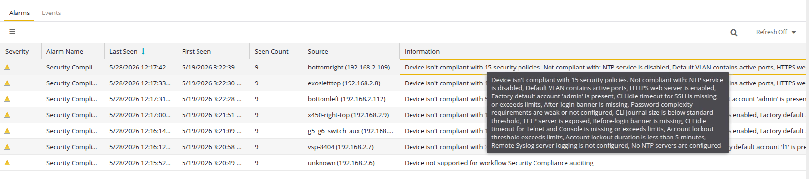

Pedro Cairrão & Paulo Pereira
Explicit Network Automation
Overcoming API fragmentation, orchestrating configurations, and complex telemetry reporting across fragmented enterprise infrastructures.
Project Deadlines & Complexity
Line chart showing technical complexity rising while delivery timeframe shrinks from 2000 to 2025
Decreasing delivery timeframes intersect with continuous increases in technical complexity. Economic demands (faster time-to-market) and technical shifts (Robotic Process Automation, Infrastructure as Code, LLMs) strictly drive the requirement to optimize execution time via automation. While new technologies accelerate development and aid in navigating increasingly complex projects, they are taken for granted and ultimately end up further shirking the expected project deadlines.
Automation Paradigms
Automation applies technology to reduce re-work and achieve outcomes with minimal human input. Offloading repetitive tasks to a deterministic system increases precision, ensures consistency, and reduces human error.
Implicit Automation
Autonomous behavior implemented directly by native network protocols without external intervention.
Explicit Automation
Management-plane operations executed through external control logic. Utilizes imperative instructions to invoke configuration, monitoring, or remediation tasks on devices.
Intent-Based Networking (IBN)
A declarative operational model. Administrators define the desired network state (intent), and the underlying system automatically translates, executes, and verifies the device-specific configurations.
Objectives
Programmatic Workflows
Abstract manual multi-vendor network administration into unified, automated execution pipelines.
External Visualization
Export localized execution telemetry to an Elastic Stack for long-term historical trend analysis.
Laboratory Infrastructure
To expose specific API and firmware constraints, the framework was deployed against a physical laboratory topology rather than a simulated environment.
- Scale: 7 physical switches operating across 286 active interfaces.
- Multi-Vendor Environment: Integrated ExtremeXOS, VOSS platforms, and a Cisco Catalyst running Cisco IOS to evaluate architectural extensibility against non-native API structures across different OSes.
- Firmware Lifecycle: Exposed state extraction limits by mixing hardware lifecycles, specifically contrasting legacy hardware (X460-G1 capped to EXOS 16) with modern platforms (X450-G2 running latest versions).

XIQ Site Engine
Operates as an on-premise Network Management System handling device onboarding, providing a centralized management-plane, and driving the integrated workflow engine, alarms, AAA, and analytics. XIQ-SE is composed of several modules and appliances, and each extends the capabilities of XIQ-SE.

Source: XIQ-SE - Installation & Configuration Student Guide, 2025 Extreme Networks
The Multi-Protocol Waterfall Architecture
The core engineering solution to API fragmentation. The script evaluates devices by cascading through protocols, prioritizing state extraction success over protocol strictness.
Developed Workflows
The architecture abstracts manual operations into a series of functional Python workflows. These scripts execute locally on the XIQ-SE engine, applying the waterfall methodology to ensure reliable task completion across the fabric.
Unused Ports
Identifies and dynamically disables stale access ports based on user defined thresholds.
WLAN Topology Mapping
Maps physical Wireless Local Area Network structures. Lists the WLAN APs deployed throughout the network and their respective uplinks.
Security Compliance
Evaluates the infrastructure against predefined policy matrices and enforces compliance via OS-specific correction commands.
SFP Discovery
Maps physical transceiver connection points across the network and extracts optical Rx/Tx power, voltage, and temperature metrics flagging health status warnings.
Legacy VSP Switches
Discovers legacy Avaya VSP switches on the network (e.g., distinguishing older models from newer VSP 7400 and VSP 4900 series).
EntraID User Validation
Verifies if a user exists in EntraID via the Microsoft Graph API.
Intune Device Compliance Check
Verifies which policies are being enforced, and not enforced by Microsoft Intune for device enrollment.
Push to Elastic (Helper)
Centralized transport workflow managing the Elasticsearch telemetry ingestion pipeline.
Event Dispatcher (Helper)
Bridges workflow executions with the centralized XIQ-SE Alarm management plane. Triggers pre-defined fault alarms for network operators.
Internal Visualization - Workflow Output
Automated workflow outputs are surfaced directly within the XIQ-SE management plane to provide immediate, localized execution feedback.
Security Hardening (EXOS)

Unused Ports (Cisco IOS)

Internal Visualization - Alarms
Dispatched events trigger localized near real-time operational fault detection and security compliance alarms.
Security Hardening Fault Alarms

External Visualization - Elastic Stack
Execution telemetry is offloaded to Elastic Stack. This provides complex data visualization, time-series aggregation, and network-wide visibility long-term reporting.
Kibana: Unused Ports Dashboard

Kibana: Security Compliance Dashboard

Baseline compliance doubled automatically. Remaining non-compliant fractions represent policies flagged for manual configuration.
Cloud Identity & NAC Zero-Caching Foundation
Current NAC implementations incur operational latency through persistent database caching. Workflows were developed utilizing the Microsoft Graph API to extract user identities from EntraID and compliance policies from Intune, establishing a stateless enforcement pipeline.
Acts as LDAP compatibility middleware bridging cloud identity with legacy 802.1X.
- Proxies LDAPS to Entra Domain Services.
- NAC provisions restricted 'Evaluating' policy upon initial Accept.
- Graph API queried in near real-time. CoA transitions to production upon compliance.
- Inject access policies in NAC via NBI.
SSO integration pushing authorization states directly into NAC via the NBI.
- Captive portal intercepts unauthenticated devices.
- Forces native EntraID OAuth/SAML authentication.
- Middleware verifies Intune status via Graph API and issues CoA.
- Inject access policies in NAC via NBI.
Certificate-based validation utilizing an external proxy RADIUS service.
- Endpoint enrolls via SCEP, obtaining X.509 with Entra Device ID.
- NAC acts as stateless RADIUS proxy.
- Remote service extracts Device ID, queries Intune, returns Accept/Reject.
- Inject access policies in NAC via NBI.
Outcomes
Deterministic State Extraction
Achieved complete state visibility across heterogeneous hardware, bypassing API fragmentation via a multi-protocol fallback architecture.
Automated Remediation
Deployed state-dependent configuration modules to programmatically enforce infrastructure policies and dynamically remediate operational anomalies across the multi-vendor fabric.
Decoupled Observability
Established a centralized telemetry pipeline utilizing Elasticsearch and Kibana to create custom dashboards, enable long-term historical analytics and time-series network visibility.
NAC Zero-Caching Foundation
Engineered three distinct architectural frameworks designed to eliminate persistent NAC database caching, establishing the logic for stateless zero-trust enforcement.